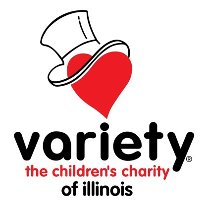

Making Variety of Illinois’ website more accessible

I helped audit and redesign the website of a nonprofit serving families with special needs, so more of its visitors can navigate it and donate.
The problem
Variety of Illinois came to our team wanting its website to be more accessible. The organization serves families with special needs, so it was important that the site worked for everyone who visits it and that this was visible to the public.
Research
We started by understanding what the site contained and where it fell short.
- Content inventory. We cataloged every page so we had a full picture of the site’s layout and didn’t miss anything.
- Accessibility audit. I led the team in auditing the site’s pages using browser developer tools, the WAVE Web Accessibility Tool, and my knowledge of the WCAG guidelines.
- Card sorting. I helped design a card sorting activity for potential site users to check that the navigation made sense to them.
Design process
I helped evaluate the audit findings to decide which issues mattered most, then we began designing solutions for them.
- We redesigned the problem elements following WCAG guidelines.
- We validated the designs by usability testing a mid-fidelity prototype.
- We made the volunteer sign-up page a priority in our solutions, to facilitate support and participation.
Final design
We built a higher-fidelity prototype of the full site in Figma.
Outcome and reflection
We redesigned many of the site’s problem elements and improved its navigation. Our design reduced scroll distance for users (especially important for mobile users) while preserving the key functionality of each page. These changes were validated by feedback we received from potential users.
Upon reflection, one thing I’d do is work more closely with the web developers from the start, so that what we designed was something they could launch. Our team lacked the guidance of a more experienced designer who could keep us within those limits, and closer contact with the developers might have filled that gap.